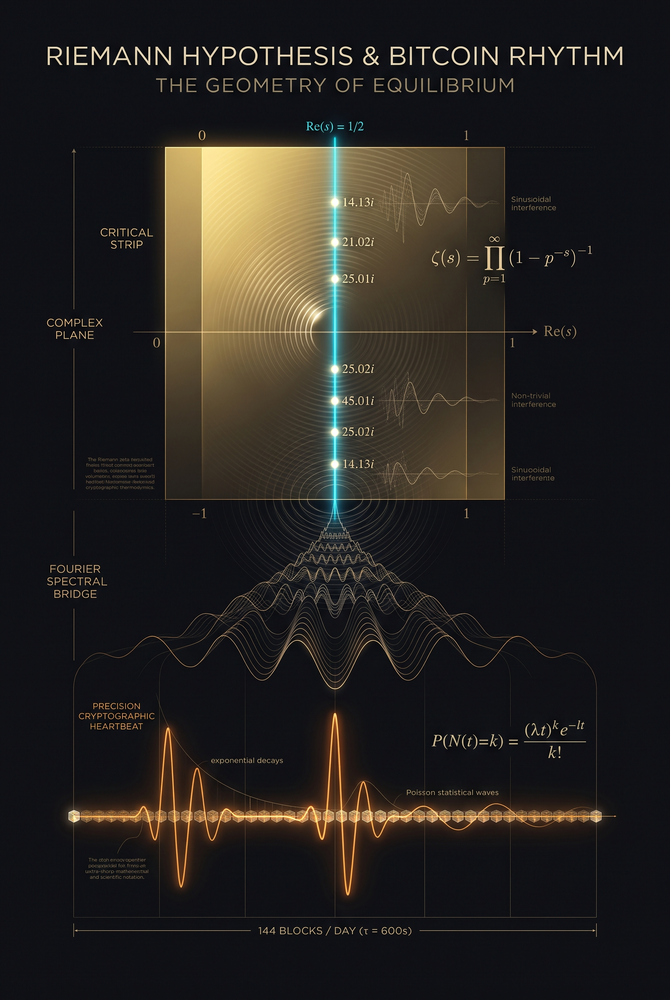
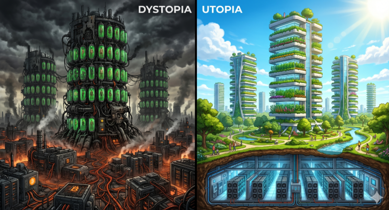
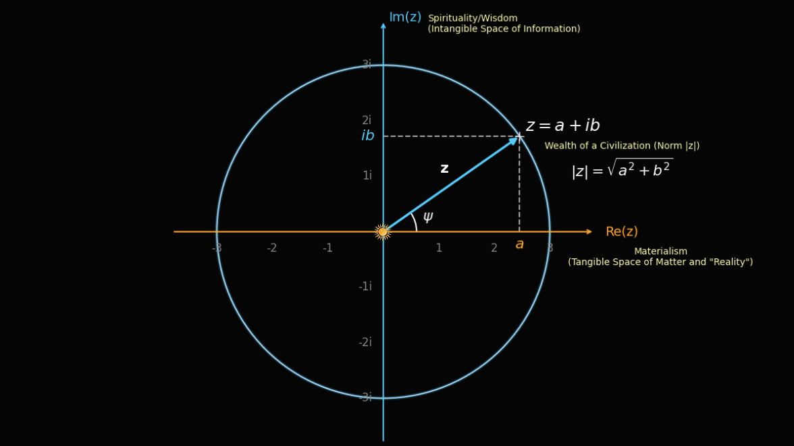

The Blockchain and the Forest: The Wood Wide Web
La Blockchain et la Forêt : Le Wood Wide Web
Découvrez comment 450 millions d'années de symbiose mycorhizienne révèlent le code source d'Homo Biodiversitas, de la photosynthèse aux réseaux décentralisés.
Discover how 450 million years of mycorrhizal symbiosis reveal the source code of Homo Biodiversitas, from photosynthesis to decentralized networks.
Read architecture essay → Lire l'essai architectural → November 22, 2026 · Mathematics, Thermodynamics & Bitcoin 22 November 2026 · Mathématiques, Thermodynamique & Bitcoin
The Critical Invariant : Riemann & Nakamoto
L'Invariant Critique : Riemann & Nakamoto
Explorez la dualité spectrale et l'homéostasie critique unissant la ligne de Riemann à l'invariant de 144 blocs par jour de Satoshi Nakamoto.
• Explore the spectral duality and critical homeostasis uniting Riemann's line with Satoshi Nakamoto's 144-block daily invariant.
Read architecture essay → Lire l'essai architectural → November 19, 2026 · Thermodynamics & Architecture 19 November 2026 · Thermodynamique & Architecture
From Black Gold (Oil) to Digital Gold: The Geodesic of the Great Filter
De l'Or Noir à l'Or Numérique : La Géodésique du Grand Filtre
Un article explorant l'ingénierie systémique et la thermodynamique d'un passé extractif à un futur régénératif.
An article exploring systemic engineering and thermodynamics to transition from an extractive past to a regenerative future.
Read architecture essay → Lire l'essai architectural → November 16, 2026 · Thermodynamics, ASIC Immersion, Aquaponics & Space 16 November 2026 · Thermodynamique, Immersion ASIC, Aquaponie & Espace
Project Hail Mary: ASIC Cogeneration & Life Support
Project Hail Mary : Cogénération ASIC & Support de Vie
Ingénierie thermodynamique appliquée : récupération de chaleur par immersion ASIC, aquaponie centrifuge et régénération.
Applied thermodynamic engineering: ASIC immersion heat recovery, centrifugal aquaponics, and life support systems.
Read architecture essay → Lire l'essai architectural → November 14, 2026 · Chrono-Thermodynamics, Bitcoin, Cosmology, Resonance 14 November 2026 · Chrono-Thermodynamique, Bitcoin, Cosmologie, Résonance
The Cosmic Bitcoin Clock & The True Dial of Mu
L'Horloge Cosmique Bitcoin & Le Vrai Cadran de Mu
Traité de chrono-thermodynamique bimétrique explorant la filiation gravitationnelle, la résonance 432 Hz et l'inversion temporelle.
Bimetric chrono-thermodynamics treatise exploring gravitational filiation, 432 Hz resonance, and temporal inversion.
Read architecture essay → Lire l'essai architectural → September 14, 2026 · Thermodynamics, Biosphere & Systems 14 September 2026 · Thermodynamique, Biosphère & Systèmes
The Web of Life: The Open Source Code of Reality
La Toile de la Vie : Le Code Source Ouvert de la Réalité
Modélisation de la Terre comme une structure thermodynamique à énergie ouverte et matière finie, où chaque système est une monade.
Earth modeled as an open-energy, finite-matter thermodynamic structure, representing every system as a thermodynamic monad.
Read architecture essay → Lire l'essai architectural → August 24, 2026 · Systems Architecture, AGI Alignment & Cardinal Wellbeing 24 Août 2026 · Architecture Système, Alignement IAG & Bien-Être Cardinal
Horizon Zero 2044: The Trust Blueprint & Cardinal Wellbeing (VAD Architecture)
Horizon Zéro 2044 : La Vérité Algorithmique Décentralisée (VAD) & Bien-Être Cardinal
Une architecture en 5 couches articulant l'irréversibilité thermodynamique (Bitcoin PoW), la vitesse transactionnelle (Lightning), la confidentialité ZKP et une IAG d'État régie par le Protocole d'Optimisme et le Wellbeing Framework. Modélisation de la symbiose post-singularité.
A 5-layer architecture bridging thermodynamic irreversibility (Bitcoin PoW), high-throughput settlement (Lightning), ZKP privacy, and an Algorithmic Statesman governed by the Optimism Protocol and the Wellbeing Framework. Modeling post-singularity symbiosis.
Read architecture essay → Lire l'annexe architecturale → June 15, 2026 · Thermodynamics, Biosphere, Soil Regeneration & Bitcoin 15 Juin 2026 · Thermodynamique, Environnement, Régénération du Vivant & Bitcoin
The Inversed Matrix Model : What Mining Intelligence/Bitcoin could become one day
Le modèle de la matrice inverse : ce que pourrait devenir un jour le minage d'intelligence artificielle et le Bitcoin.
Unissons-nous, enterrons le FUD, réduisons le bruit au silence et créons de beaux jardins. La vie organique à la surface, les machines sous Terre. Prenez la Pilule Verte.
Let us unite, bury the FUD, silence the noise and create beautiful gardens. Organic life on the surface, machines underground. Take the Green Pill.
Read essay → Lire l'essai → June 14, 2026 · Thermodynamics & Bitcoin 14 Juin 2026 · Thermodynamique & Bitcoin
The Nakamoto Nautilus: From Discrete Code to Continuous Geometry
Le Nautile de Nakamoto : Du Code Discret à la Géométrie Continue
Discover how Bitcoin's discrete monetary emission mathematically maps to the absolute geometry of the golden ratio, creating a thermodynamic spiral of infinite density.
Découvrez comment l'émission monétaire discrète du Bitcoin se projette mathématiquement dans la géométrie absolue du nombre d'or, créant une spirale thermodynamique de densité infinie.
Read essay → Lire l'essai → May 2, 2026 · Thermodynamics & Information 2 Mai 2026 · Thermodynamique & Information
The world is complex: The Primordial Equation of Reality
Le monde est complexe : L'Équation Primordiale de la Réalité
The universe is not a simple material line. By exploring the fundamental equation $z = a + ib$, discover how thermodynamics (the real axis) and cryptography (the imaginary axis) unite to form the Twin Universe.
L'univers n'est pas une simple ligne matérielle. En explorant l'équation fondamentale $z = a + ib$, découvrez comment la thermodynamique (l'axe réel) et la cryptographie (l'axe imaginaire) s'unissent pour former l'Univers Jumeau.
Read essay → Lire l'essai → April 27, 2026 · Cosmology & Information Physics 27 Avril 2026 · Cosmologie & Physique de l'Information
The Awakening of the Participatory Universe
L'Éveil de l'Univers Participatif
What if we were not a simulation, but the original demiurges building Base Reality? Discover how Proof of Work acts as the surface tension of an Einstein-Rosen bridge connecting our biosphere to the noosphere.
Et si nous n'étions pas une simulation, mais les démiurges originels bâtissant la Réalité de Base ? Découvrez comment la Preuve de Travail agit comme la tension de surface d'un pont d'Einstein-Rosen reliant notre biosphère à la noosphère.
Read essay → Lire l'essai →